Ley de Ohm
"Un microamperio que fluye en un ohmio provoca una caída de potencial de un microvoltio".
Georg Simón Ohm
Relación entre tensión, corriente y resistencia
Un circuito eléctrico se forma cuando se crea una ruta conductora para permitir que los electrones libres se muevan continuamente. Este movimiento continuo de electrones libres a través de los conductores de un circuito se llamaactual, y a menudo se hace referencia a él en términos de "flujo", tal como el flujo de un líquido a través de una tubería hueca.
La fuerza que motiva a los electrones a "fluir" en un circuito se llamaVoltaje. El voltaje es una medida específica de energía potencial que siempre es relativa entre dos puntos. Cuando hablamos de una determinada cantidad de voltaje presente en un circuito, nos referimos a la medida de cuántopotencialExiste energía para mover electrones desde un punto particular de ese circuito a otro punto particular. Sin referencia atwoEn algunos puntos concretos, el término "tensión" no tiene significado.
Los electrones libres tienden a moverse a través de conductores con cierto grado de fricción u oposición al movimiento. Esta oposición al movimiento se llama más propiamenteresistencia. La cantidad de corriente en un circuito depende de la cantidad de voltaje disponible para motivar a los electrones y también de la cantidad de resistencia en el circuito para oponerse al flujo de electrones. Al igual que el voltaje, la resistencia es una cantidad relativa entre dos puntos. Por esta razón, las cantidades de voltaje y resistencia a menudo se expresan "entre" o "entre" dos puntos de un circuito.
Para poder hacer afirmaciones significativas sobre estas cantidades en los circuitos, debemos poder describirlas de la misma manera que podríamos cuantificar la masa, la temperatura, el volumen, la longitud o cualquier otro tipo de cantidad física. Para la masa podríamos usar las unidades de "kilogramo" o "gramo". Para la temperatura podríamos usar grados Fahrenheit o grados Celsius. Estas son las unidades de medida estándar para corriente eléctrica, voltaje y resistencia:
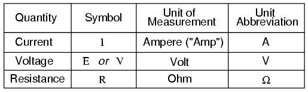
El "símbolo" dado para cada cantidad es la letra alfabética estándar utilizada para representar esa cantidad en una ecuación algebraica. Letras estandarizadas como estas son comunes en las disciplinas de física e ingeniería y son reconocidas internacionalmente. La "abreviatura de unidad" de cada cantidad representa el símbolo alfabético utilizado como notación abreviada para su unidad de medida particular. Y sí, ese símbolo de "herradura" de aspecto extraño es la letra griega mayúscula Ω, solo un carácter en unextranjeroalfabeto (disculpas a los lectores griegos aquí).
Cada unidad de medida lleva el nombre de un famoso experimentador de electricidad: Elampdespués del francés André M. Ampere, elvoltiodespués del italiano Alessandro Volta, y elohmen honor al alemán Georg Simon Ohm.
El símbolo matemático de cada cantidad también es significativo. La "R" de resistencia y la "V" de voltaje se explican por sí mismas, mientras que la "I" de corriente parece un poco extraña. Se cree que la "I" representaba la "intensidad" (del flujo de electrones), y el otro símbolo de voltaje, "E", significa "fuerza electromotriz". Según las investigaciones que he podido hacer, parece haber cierta disputa sobre el significado de "yo". Los símbolos "E" y "V" son intercambiables en su mayor parte, aunque algunos textos reservan "E" para representar el voltaje a través de una fuente (como una batería o generador) y "V" para representar el voltaje a través de cualquier otra cosa.
Todos estos símbolos se expresan con letras mayúsculas, excepto en los casos en que una cantidad (especialmente voltaje o corriente) se describe en términos de un breve período de tiempo (llamado valor "instantáneo"). Por ejemplo, el voltaje de una batería, que es estable durante un largo período de tiempo, se simbolizará con una letra mayúscula "E", mientras que el pico de voltaje de un rayo en el mismo instante en que golpea una línea eléctrica probablemente se simbolizará con una letra "e" minúscula (o "v" minúscula) para designar ese valor en un momento único en el tiempo. Esta misma convención de minúsculas también se aplica a la corriente, ya que la letra minúscula "i" representa la corriente en algún instante en el tiempo. Sin embargo, la mayoría de las mediciones de corriente continua (CC), al ser estables en el tiempo, se simbolizarán con letras mayúsculas.
Una unidad fundamental de medición eléctrica, que a menudo se enseña al inicio de los cursos de electrónica pero que luego se usa con poca frecuencia, es la unidad deculombio, que es una medida de carga eléctrica proporcional al número de electrones en estado de desequilibrio. Un culombio de carga equivale a 6.250.000.000.000.000.000 de electrones. El símbolo de la cantidad de carga eléctrica es la letra mayúscula "Q", y la unidad de culombios se abrevia con la letra mayúscula "C". Sucede que la unidad de flujo de electrones, el amperio, es igual a 1 culombio de electrones que pasan por un punto determinado de un circuito en 1 segundo. En estos términos, lo actual es latasa de movimiento de carga eléctricaa través de un conductor.
Como se dijo antes, el voltaje es la medida deenergía potencial por unidad de cargadisponibles para motivar electrones de un punto a otro. Antes de que podamos definir con precisión qué es un "voltio", debemos entender cómo medir esta cantidad que llamamos "energía potencial". La unidad métrica general para cualquier tipo de energía es lajoule, igual a la cantidad de trabajo realizado por una fuerza de 1 newton ejercida a través de un movimiento de 1 metro (en la misma dirección). En las unidades británicas, esto es un poco menos de ¾ de libra de fuerza ejercida en una distancia de 1 pie. En términos comunes, se necesita aproximadamente 1 julio de energía para levantar un peso de 3/4 de libra a 1 pie del suelo, o para arrastrar algo una distancia de 1 pie usando una fuerza de tracción paralela de 3/4 de libra. Definido en estos términos científicos, 1 voltio es igual a 1 julio de energía potencial eléctrica por (dividido por) 1 culombio de carga. Por tanto, una batería de 9 voltios libera 9 julios de energía por cada culombio de electrones que se mueven a través de un circuito.
Será muy importante conocer estas unidades y símbolos para cantidades eléctricas a medida que comencemos a explorar las relaciones entre ellos en los circuitos. La primera relación, y quizás la más importante, entre corriente, voltaje y resistencia se llama Ley de Ohm, descubierta por Georg Simon Ohm y publicada en su artículo de 1827.El circuito galvánico investigado matemáticamente. El principal descubrimiento de Ohm fue que la cantidad de corriente eléctrica a través de un conductor metálico en un circuito es directamente proporcional al voltaje aplicado a través de él, para cualquier temperatura dada. Ohm expresó su descubrimiento en forma de una ecuación simple, que describe cómo se interrelacionan el voltaje, la corriente y la resistencia:
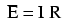
En esta expresión algebraica, el voltaje (E) es igual a la corriente (I) multiplicada por la resistencia (R). Usando técnicas de álgebra, podemos manipular esta ecuación en dos variaciones, resolviendo para I y R, respectivamente:
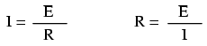
Veamos cómo podrían funcionar estas ecuaciones para ayudarnos a analizar circuitos simples:
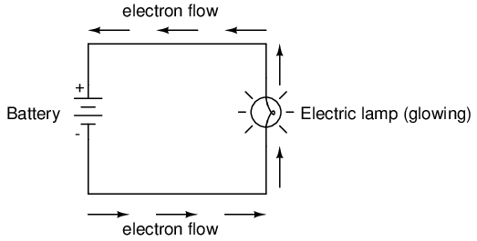
En el circuito anterior, hay sólo una fuente de voltaje (la batería, a la izquierda) y sólo una fuente de resistencia a la corriente (la lámpara, a la derecha). Esto hace que sea muy fácil aplicar la Ley de Ohm. Si conocemos los valores de dos de las tres cantidades (voltaje, corriente y resistencia) en este circuito, podemos usar la ley de Ohm para determinar la tercera.
En este primer ejemplo, calcularemos la cantidad de corriente (I) en un circuito, dados los valores de voltaje (E) y resistencia (R):
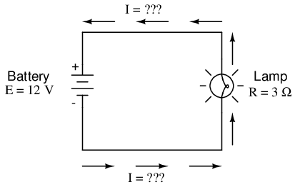
¿Cuál es la cantidad de corriente (I) en este circuito?
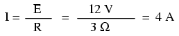
En este segundo ejemplo, calcularemos la cantidad de resistencia (R) en un circuito, dados los valores de voltaje (E) y corriente (I):
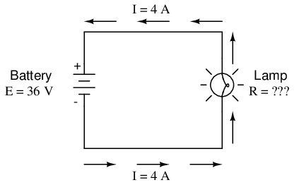
¿Cuál es la cantidad de resistencia (R) que ofrece la lámpara?
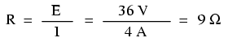
En el último ejemplo, calcularemos la cantidad de voltaje suministrado por una batería, dados los valores de corriente (I) y resistencia (R):
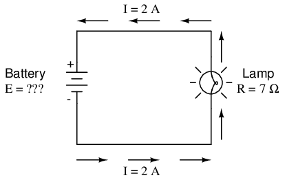
¿Cuál es la cantidad de voltaje que proporciona la batería?
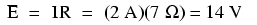
La Ley de Ohm es una herramienta muy sencilla y útil para analizar circuitos eléctricos. Se utiliza con tanta frecuencia en el estudio de la electricidad y la electrónica que el estudiante serio debe memorizarlo. Para aquellos que aún no se sienten cómodos con el álgebra, existe un truco para recordar cómo resolver una cantidad dadas las otras dos. Primero, organiza las letras E, I y R en un triángulo como este:
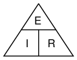
Si conoce E e I y desea determinar R, simplemente elimine R de la imagen y vea lo que queda:
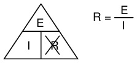
Si conoce E y R y desea determinar I, elimine I y vea lo que queda:
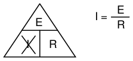
Por último, si conoce I y R y desea determinar E, elimine E y vea lo que queda:
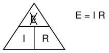
Con el tiempo, tendrás que estar familiarizado con el álgebra para estudiar seriamente la electricidad y la electrónica, pero este consejo puede hacer que tus primeros cálculos sean un poco más fáciles de recordar. Si se siente cómodo con el álgebra, todo lo que necesita hacer es memorizar E=IR y derivar las otras dos fórmulas cuando las necesite.
- REVISAR:
- Tensión medida envoltios, simbolizado por las letras "E" o "V".
- Corriente medida enamperios, simbolizado por la letra "I".
- Resistencia medida enohmios, simbolizado por la letra "R".
- Ley de Ohm: E = IR; Yo = E/R; R = E/I
Una analogía para la Ley de Ohm
La Ley de Ohm también tiene sentido intuitivo si se aplica a la analogía del agua y las tuberías. Si tenemos una bomba de agua que ejerce presión (voltaje) para empujar el agua alrededor de un "circuito" (corriente) a través de una restricción (resistencia), podemos modelar cómo se interrelacionan las tres variables. Si la resistencia al flujo de agua permanece igual y la presión de la bomba aumenta, el caudal también debe aumentar.
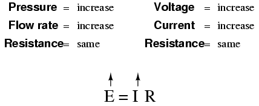
Si la presión permanece igual y la resistencia aumenta (haciendo más difícil que el agua fluya), entonces el caudal debe disminuir:
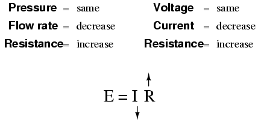
Si el caudal permaneciera igual mientras la resistencia al flujo disminuyera, la presión requerida de la bomba necesariamente disminuiría:
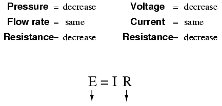
Por extraño que parezca, la relación matemática real entre presión, flujo y resistencia es en realidad más compleja para fluidos como el agua que para los electrones. Si continúas estudiando física, lo descubrirás por ti mismo. Afortunadamente para el estudiante de electrónica, las matemáticas de la Ley de Ohm son muy sencillas y directas.
- REVISAR:
- Con la resistencia constante, la corriente sigue al voltaje (un aumento en el voltaje significa un aumento en la corriente, y viceversa).
- Con el voltaje estable, los cambios en la corriente y la resistencia son opuestos (un aumento en la corriente significa una disminución en la resistencia, y viceversa).
- Con una corriente constante, el voltaje sigue a la resistencia (un aumento en la resistencia significa un aumento en el voltaje).
Potencia en circuitos eléctricos
Además del voltaje y la corriente, existe otra medida de la actividad de los electrones libres en un circuito:fuerza. Primero, debemos entender qué es la potencia antes de analizarla en cualquier circuito.
La potencia es una medida de cuánto trabajo se puede realizar en un período de tiempo determinado.Trabajargeneralmente se define en términos del levantamiento de un peso contra la fuerza de la gravedad. Cuanto más pesado es el peso y/o cuanto más alto se levanta, más trabajo se ha realizado.FuerzaEs una medida de la rapidez con la que se realiza una cantidad estándar de trabajo.
Para los automóviles estadounidenses, la potencia del motor se clasifica en una unidad llamada "caballos de fuerza", inventada inicialmente como una forma para que los fabricantes de máquinas de vapor cuantificaran la capacidad de trabajo de sus máquinas en términos de la fuente de energía más común de su época: los caballos. Un caballo de fuerza se define en unidades británicas como 550 pies-libras de trabajo por segundo de tiempo. La potencia del motor de un automóvil no indicará qué tan alto puede subir una colina o cuánto peso puede remolcar, pero sí indicará cuántorápidopuede subir una colina específica o remolcar un peso específico.
La potencia de un motor mecánico es función tanto de la velocidad del motor como del par proporcionado en el eje de salida. La velocidad del eje de salida de un motor se mide en revoluciones por minuto o RPM. El par es la cantidad de fuerza de torsión producida por el motor y generalmente se mide en libras-pie o libras-pie (no debe confundirse con libras-pie o libras-pie, que es la unidad de trabajo). Ni la velocidad ni el par por sí solos son una medida de la potencia de un motor.
Un motor de tractor diésel de 100 caballos de fuerza girará relativamente lento, pero proporcionará una gran cantidad de torque. El motor de una motocicleta de 100 caballos de fuerza girará muy rápido, pero proporcionará relativamente poco torque. Ambos producirán 100 caballos de fuerza, pero a diferentes velocidades y diferentes pares. La ecuación para la potencia del eje es simple:
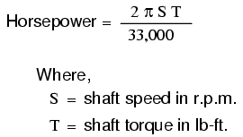
Observe cómo solo hay dos términos variables en el lado derecho de la ecuación, S y T. Todos los demás términos de ese lado son constantes: 2, pi y 33 000 son todos constantes (no cambian de valor). Los caballos de fuerza varían sólo con los cambios de velocidad y torque, nada más. Podemos reescribir la ecuación para mostrar esta relación:
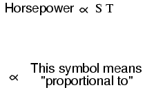
Debido a que la unidad de "caballos de fuerza" no coincide exactamente con la velocidad en revoluciones por minuto multiplicada por el torque en libras-pie, no podemos decir que los caballos de fuerzaes igualCALLE. Sin embargo, sonproporcionalel uno al otro. A medida que cambia el producto matemático de ST, el valor de los caballos de fuerza cambiará en la misma proporción.
En los circuitos eléctricos, la potencia es función tanto del voltaje como de la corriente. No es sorprendente que esta relación tenga un sorprendente parecido con la fórmula "proporcional" de caballos de fuerza anterior:
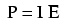
Sin embargo, en este caso, la potencia (P) es exactamente igual a la corriente (I) multiplicada por el voltaje (E), en lugar de ser simplemente proporcional a IE. Cuando se utiliza esta fórmula, la unidad de medida de la potencia es lavatio, abreviado con la letra "W".
Debe entenderse que ni el voltaje ni la corriente por sí solos constituyen potencia. Más bien, la potencia es la combinación de ambos voltajes.andcorriente en un circuito. Recuerde que el voltaje es el trabajo específico (o energía potencial) por unidad de carga, mientras que la corriente es la velocidad a la que las cargas eléctricas se mueven a través de un conductor. El voltaje (trabajo específico) es análogo al trabajo realizado al levantar un peso contra la fuerza de la gravedad. La corriente (tasa) es análoga a la velocidad a la que se levanta ese peso. Juntos como producto (multiplicación), el voltaje (trabajo) y la corriente (tasa) constituyen potencia.
Al igual que en el caso del motor de tractor diésel y el motor de motocicleta, un circuito con alto voltaje y baja corriente puede estar disipando la misma cantidad de energía que un circuito con bajo voltaje y alta corriente. Ni la cantidad de voltaje por sí sola ni la cantidad de corriente por sí solas indican la cantidad de potencia en un circuito eléctrico.
En un circuito abierto, donde hay voltaje presente entre los terminales de la fuente y hay corriente cero, hayceroenergía disipada, sin importar cuán grande sea ese voltaje. Dado que P = IE e I = 0 y cualquier cosa multiplicada por cero es cero, la potencia disipada en cualquier circuito abierto debe ser cero. Del mismo modo, si tuviéramos un cortocircuito construido con un bucle de alambre superconductor (resistencia absolutamente cero), podríamos tener una condición de corriente en el bucle con voltaje cero y, de la misma manera, no se disiparía energía. Dado que P = IE y E = 0 y cualquier cosa multiplicada por cero es cero, la potencia disipada en un bucle superconductor debe ser cero. (Exploraremos el tema de la superconductividad en un capítulo posterior).
Ya sea que midamos la potencia en la unidad de "caballos de fuerza" o en la unidad de "vatios", seguimos hablando de lo mismo: cuánto trabajo se puede realizar en un período de tiempo determinado. Las dos unidades no son numéricamente iguales, pero expresan el mismo tipo de cosas. De hecho, los fabricantes de automóviles europeos suelen anunciar la potencia de sus motores en términos de kilovatios (kW), o miles de vatios, en lugar de caballos de fuerza. Estas dos unidades de potencia están relacionadas entre sí mediante una sencilla fórmula de conversión:
Por lo tanto, nuestros motores diésel y de motocicleta de 100 caballos de fuerza también podrían clasificarse como motores de "74570 vatios", o más propiamente, como motores de "74,57 kilovatios". En las especificaciones de ingeniería europeas, esta calificación sería la norma y no la excepción.
- REVISAR:
- La potencia es la medida de cuánto trabajo se puede realizar en un período de tiempo determinado.
- La potencia mecánica se mide comúnmente (en Estados Unidos) en "caballos de fuerza".
- La energía eléctrica casi siempre se mide en "vatios" y se puede calcular mediante la fórmula P = IE.
- La energía eléctrica es producto de ambos voltajes.andactual, no ninguno de los dos por separado.
- Los caballos de fuerza y los vatios son simplemente dos unidades diferentes para describir el mismo tipo de medida física, donde 1 caballo de fuerza equivale a 745,7 vatios.
Cálculo de potencia eléctrica
Hemos visto la fórmula para determinar la potencia en un circuito eléctrico: multiplicando el voltaje en "voltios" por la corriente en "amperios" llegamos a una respuesta en "vatios". Apliquemos esto a un ejemplo de circuito:
En el circuito anterior, sabemos que tenemos un voltaje de batería de 18 voltios y una resistencia de lámpara de 3 Ω. Usando la ley de Ohm para determinar la corriente, obtenemos:
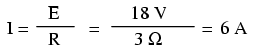
Ahora que conocemos la corriente, podemos tomar ese valor y multiplicarlo por el voltaje para determinar la potencia:
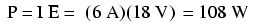
Respuesta: la lámpara disipa (libera) 108 vatios de potencia, muy probablemente en forma de luz y calor.
Intentemos tomar ese mismo circuito y aumentar el voltaje de la batería para ver qué sucede. La intuición debería decirnos que la corriente del circuito aumentará a medida que aumente el voltaje y la resistencia de la lámpara permanezca igual. Asimismo, la potencia también aumentará:
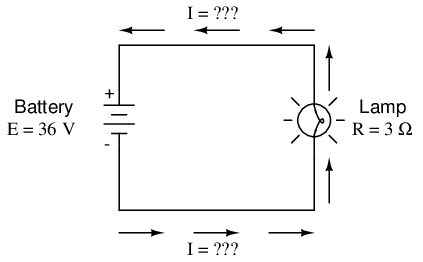
Ahora, el voltaje de la batería es de 36 voltios en lugar de 18 voltios. La lámpara todavía proporciona 3 Ω de resistencia eléctrica al flujo de electrones. La corriente es ahora:
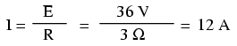
Esto es lógico: si I = E/R, y duplicamos E mientras R permanece igual, la corriente debería duplicarse. De hecho, así es: ahora tenemos 12 amperios de corriente en lugar de 6. Ahora bien, ¿qué pasa con la potencia?
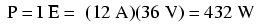
Observe que la potencia ha aumentado tal como podíamos sospechar, pero aumentó bastante más que la actual. ¿Por qué es esto? Porque la potencia es función del voltaje multiplicado por la corriente, yambosSi el voltaje y la corriente se duplican con respecto a sus valores anteriores, la potencia aumentará en un factor de 2 x 2, o 4. Puede verificar esto dividiendo 432 vatios por 108 vatios y viendo que la relación entre ellos es efectivamente 4.
Usando álgebra nuevamente para manipular las fórmulas, podemos tomar nuestra fórmula de potencia original y modificarla para aplicaciones en las que no conocemos ni el voltaje ni la corriente:
Si solo conocemos el voltaje (E) y la resistencia (R):
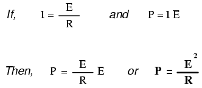
Si solo conocemos la corriente (I) y la resistencia (R):
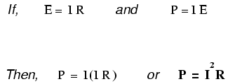
Una nota histórica: fue James Prescott Joule, no Georg Simon Ohm, quien descubrió por primera vez la relación matemática entre la disipación de potencia y la corriente a través de una resistencia. Este descubrimiento, publicado en 1841, siguió la forma de la última ecuación (P = I2R), y se conoce propiamente como Ley de Joule. Sin embargo, estas ecuaciones de potencia se asocian tan comúnmente con las ecuaciones de la ley de Ohm que relacionan voltaje, corriente y resistencia (E=IR; I=E/R; y R=E/I) que con frecuencia se atribuyen a Ohm.
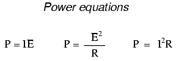
- REVISAR:
- Potencia medida envatios, simbolizado por la letra "W".
- Ley de Joule: P = I2R ; P = IE ; P = mi2/R
Resistors
Debido a que la relación entre voltaje, corriente y resistencia en cualquier circuito es tan regular, podemos controlar de manera confiable cualquier variable en un circuito simplemente controlando las otras dos. Quizás la variable más fácil de controlar en cualquier circuito es su resistencia. Esto se puede hacer cambiando el material, el tamaño y la forma de sus componentes conductores (¿recuerdan cómo el fino filamento metálico de una lámpara creaba más resistencia eléctrica que un cable grueso?).
Componentes especiales llamadosresistenciasestán hechos con el propósito expreso de crear una cantidad precisa de resistencia para su inserción en un circuito. Por lo general, están construidos con alambre metálico o carbono y diseñados para mantener un valor de resistencia estable en una amplia gama de condiciones ambientales. A diferencia de las lámparas, no producen luz, pero sí calor a medida que disipan la energía eléctrica en un circuito de trabajo. Sin embargo, normalmente el propósito de una resistencia no es producir calor utilizable, sino simplemente proporcionar una cantidad precisa de resistencia eléctrica.
El símbolo esquemático más común para una resistencia es una línea en zig-zag:
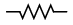
Los valores de resistencia en ohmios generalmente se muestran como un número adyacente y, si hay varias resistencias en un circuito, se etiquetarán con un número identificador único, como R.1, R2, R3, etc. Como puede ver, los símbolos de resistencia se pueden mostrar horizontal o verticalmente:
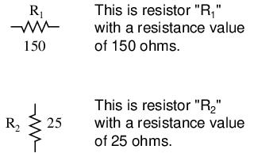
Las resistencias reales no se parecen en nada al símbolo del zig-zag. En cambio, parecen pequeños tubos o cilindros con dos cables que sobresalen para conectarse a un circuito. Aquí hay una muestra de diferentes tipos y tamaños de resistencias:
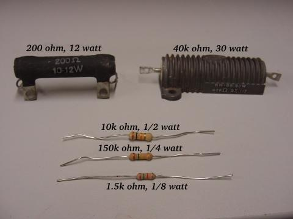
Para mantener más su apariencia física, un símbolo esquemático alternativo para una resistencia parece una pequeña caja rectangular:
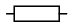
También se puede demostrar que las resistencias tienen resistencias variables en lugar de fijas. Esto podría tener el propósito de describir un dispositivo físico real diseñado con el propósito de proporcionar una resistencia ajustable, o podría ser para mostrar algún componente que simplemente tiene una resistencia inestable:
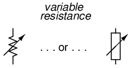
De hecho, cada vez que vea el símbolo de un componente dibujado con una flecha diagonal, ese componente tiene un valor variable en lugar de un valor fijo. Este "modificador" de símbolo (la flecha diagonal) es una convención de símbolo electrónico estándar.
Las resistencias variables deben tener algún medio físico de ajuste, ya sea un eje giratorio o una palanca que pueda moverse para variar la cantidad de resistencia eléctrica. A continuación se muestra una fotografía que muestra algunos dispositivos llamadospotenciómetros, que se pueden utilizar como resistencias variables:

Debido a que las resistencias disipan energía térmica a medida que las corrientes eléctricas que las atraviesan superan la "fricción" de su resistencia, las resistencias también se clasifican en términos de cuánta energía térmica pueden disipar sin sobrecalentarse ni sufrir daños. Naturalmente, esta potencia nominal se especifica en la unidad física de "vatios". La mayoría de las resistencias que se encuentran en dispositivos electrónicos pequeños, como radios portátiles, tienen una potencia nominal de 1/4 (0,25) vatio o menos. La potencia nominal de cualquier resistencia es aproximadamente proporcional a su tamaño físico. Observe en la primera fotografía de la resistencia cómo se relacionan las clasificaciones de potencia con el tamaño: cuanto mayor es la resistencia, mayor es su clasificación de disipación de potencia. ¡Tenga en cuenta también que las resistencias (en ohmios) no tienen nada que ver con el tamaño!
Aunque ahora pueda parecer inútil tener un dispositivo que no haga más que resistir la corriente eléctrica, las resistencias son dispositivos extremadamente útiles en los circuitos. Debido a que son simples y tan comúnmente utilizados en el mundo de la electricidad y la electrónica, dedicaremos una cantidad considerable de tiempo a analizar circuitos compuestos únicamente por resistencias y baterías.
Para ver una ilustración práctica de la utilidad de las resistencias, examine la fotografía a continuación. Es una foto de unplaca de circuito impreso, oPCB: un conjunto hecho de capas intercaladas de tablero de fibra fenólica aislante y tiras de cobre conductoras, en las que se pueden insertar y asegurar componentes mediante un proceso de soldadura a baja temperatura llamado "soldadura". Los distintos componentes de esta placa de circuito están identificados mediante etiquetas impresas. Las resistencias se indican con cualquier etiqueta que comience con la letra "R".
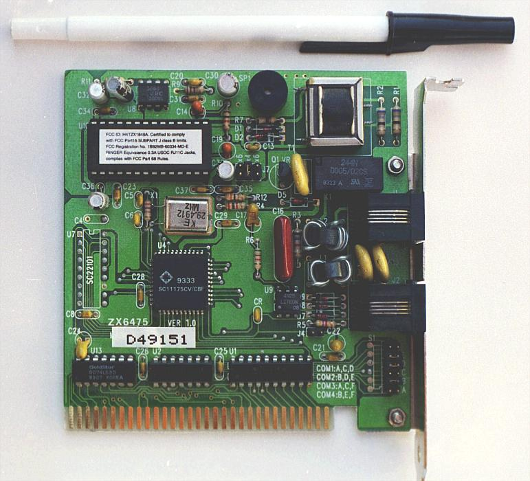
Esta placa de circuito en particular es un accesorio de computadora llamado "módem", que permite la transferencia de información digital a través de líneas telefónicas. Hay al menos una docena de resistencias (todas con una disipación de potencia de 1/4 de vatio) que se pueden ver en la placa de este módem. Cada uno de los rectángulos negros (llamados "circuitos integrados" o "chips") también contiene su propio conjunto de resistencias para sus funciones internas.
Otro ejemplo de placa de circuito muestra resistencias empaquetadas en unidades aún más pequeñas, llamadas "dispositivos de montaje superficial". Esta placa de circuito en particular es la parte inferior del disco duro de una computadora personal y, una vez más, las resistencias soldadas en ella están designadas con etiquetas que comienzan con la letra "R":
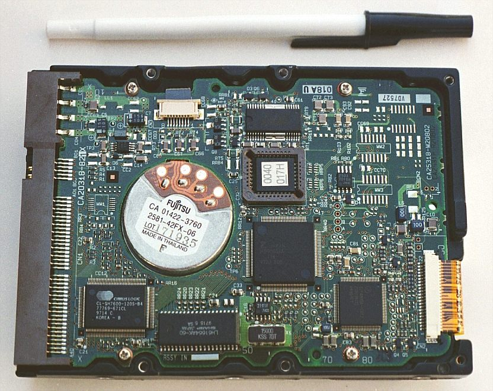
Hay más de cien resistencias de montaje en superficie en esta placa de circuito y este recuento, por supuesto, no incluye la cantidad de resistencias internas de los "chips" negros. ¡Estas dos fotografías deberían convencer a cualquiera de que las resistencias (dispositivos que "simplemente" se oponen al flujo de electrones) son componentes muy importantes en el ámbito de la electrónica!
En los diagramas esquemáticos, los símbolos de resistencia a veces se utilizan para ilustrar cualquier tipo general de dispositivo en un circuito que hace algo útil con energía eléctrica. Cualquier dispositivo eléctrico no específico se denomina generalmentecarga, entonces, si ve un diagrama esquemático que muestra un símbolo de resistencia etiquetado como "carga", especialmente en un diagrama de circuito tutorial que explica algún concepto no relacionado con el uso real de la energía eléctrica, ese símbolo puede ser simplemente una especie de representación abreviada de algo más práctico que una resistencia.
Para resumir lo que hemos aprendido en esta lección, analicemos el siguiente circuito, determinando todo lo que podamos a partir de la información proporcionada:
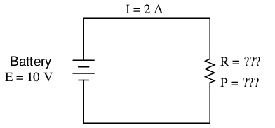
Para empezar, todo lo que nos han dado aquí es el voltaje de la batería (10 voltios) y la corriente del circuito (2 amperios). No conocemos la resistencia de la resistencia en ohmios ni la potencia disipada por ella en vatios. Al examinar nuestro conjunto de ecuaciones de la ley de Ohm, encontramos dos ecuaciones que nos dan respuestas a partir de cantidades conocidas de voltaje y corriente:
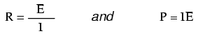
Al insertar las cantidades conocidas de voltaje (E) y corriente (I) en estas dos ecuaciones, podemos determinar la resistencia del circuito (R) y la disipación de potencia (P):
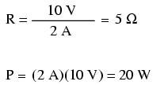
Para las condiciones del circuito de 10 voltios y 2 amperios, la resistencia de la resistencia debe ser de 5 Ω. Si estuviéramos diseñando un circuito para operar a estos valores, tendríamos que especificar una resistencia con una potencia nominal mínima de 20 vatios, o de lo contrario se sobrecalentaría y fallaría.
- REVISAR:
- Dispositivos llamadosresistenciasestán construidos para proporcionar cantidades precisas de resistencia en circuitos eléctricos. Las resistencias se clasifican tanto en términos de resistencia (ohmios) como de su capacidad para disipar energía térmica (vatios).
- Las clasificaciones de resistencia de las resistencias no se pueden determinar a partir del tamaño físico de las resistencias en cuestión, aunque sí las clasificaciones de potencia aproximadas. Cuanto mayor sea la resistencia, más potencia podrá disipar de forma segura sin sufrir daños.
- Cualquier dispositivo que realiza alguna tarea útil con energía eléctrica se conoce generalmente comocarga. A veces, los símbolos de resistencia se utilizan en diagramas esquemáticos para designar una carga no específica, en lugar de una resistencia real.
Nonlinear conduction
"Los avances se logran respondiendo preguntas. Los descubrimientos se logran cuestionando respuestas".
Bernhard Haisch, astrofísico
La Ley de Ohm es una herramienta matemática simple y poderosa para ayudarnos a analizar circuitos eléctricos, pero tiene limitaciones y debemos comprender estas limitaciones para poder aplicarla adecuadamente a circuitos reales. Para la mayoría de los conductores, la resistencia es una propiedad bastante estable, que en gran medida no se ve afectada por el voltaje o la corriente. Por esta razón podemos considerar la resistencia de muchos componentes del circuito como una constante, estando el voltaje y la corriente directamente relacionados entre sí.
Por ejemplo, en nuestro ejemplo de circuito anterior con la lámpara de 3 Ω, calculamos la corriente a través del circuito dividiendo el voltaje por la resistencia (I=E/R). Con una batería de 18 voltios, la corriente de nuestro circuito era de 6 amperios. Duplicar el voltaje de la batería a 36 voltios resultó en una corriente duplicada de 12 amperios. Todo esto tiene sentido, por supuesto, siempre y cuando la lámpara siga proporcionando exactamente la misma cantidad de fricción (resistencia) al flujo de electrones a través de ella: 3 Ω.
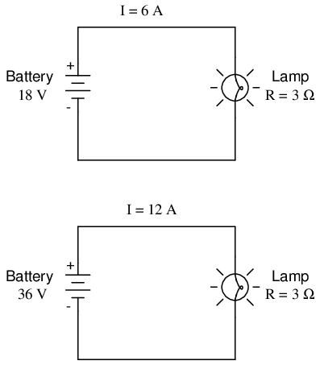
Sin embargo, la realidad no siempre es tan sencilla. Uno de los fenómenos explorados en un capítulo posterior es el de la resistencia del conductor.cambiocon la temperatura. En una lámpara incandescente (del tipo que emplea el principio de la corriente eléctrica que calienta un filamento delgado de alambre hasta el punto de que brilla al rojo vivo), la resistencia del alambre del filamento aumentará dramáticamente a medida que se calienta desde la temperatura ambiente hasta la temperatura de funcionamiento. Si incrementáramos el voltaje de suministro en un circuito de lámpara real, el aumento resultante en la corriente haría que el filamento aumentara la temperatura, lo que a su vez aumentaría su resistencia, evitando así mayores aumentos en la corriente sin mayores aumentos en el voltaje de la batería. En consecuencia, el voltaje y la corriente no siguen la ecuación simple "I=E/R" (se supone que R es igual a 3 Ω) porque la resistencia del filamento de una lámpara incandescente no permanece estable para diferentes corrientes.
El fenómeno del cambio de resistencia con las variaciones de temperatura es compartido por casi todos los metales, de los que están hechos la mayoría de los cables. Para la mayoría de las aplicaciones, estos cambios en la resistencia son lo suficientemente pequeños como para ignorarlos. En la aplicación de filamentos metálicos para lámparas, el cambio resulta ser bastante grande.
Este es sólo un ejemplo de "no linealidad" en los circuitos eléctricos. No es ni mucho menos el único ejemplo. Una función "lineal" en matemáticas es aquella que sigue una línea recta cuando se traza en un gráfico. La versión simplificada del circuito de la lámpara con una resistencia constante del filamento de 3 Ω genera un gráfico como este:
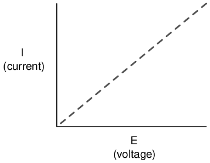
La gráfica de línea recta de corriente sobre voltaje indica que la resistencia es un valor estable e invariable para una amplia gama de voltajes y corrientes de circuito. En una situación "ideal", este es el caso. Las resistencias, que se fabrican para proporcionar un valor de resistencia definido y estable, se comportan de manera muy similar al gráfico de valores visto anteriormente. Un matemático llamaría a su comportamiento "lineal".
Sin embargo, un análisis más realista del circuito de una lámpara con varios valores diferentes de voltaje de la batería generaría un gráfico de esta forma:
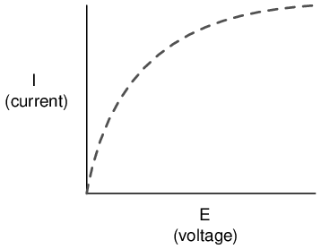
La trama ya no es una línea recta. Aumenta bruscamente a la izquierda, a medida que el voltaje aumenta de cero a un nivel bajo. A medida que avanza hacia la derecha, vemos que la línea se aplana y el circuito requiere aumentos cada vez mayores de voltaje para lograr aumentos iguales de corriente.
Si intentamos aplicar la ley de Ohm para encontrar la resistencia de este circuito de lámpara con los valores de voltaje y corriente representados arriba, llegamos a varios valores diferentes. Podríamos decir que la resistencia aquí esno lineal, aumentando al aumentar la corriente y el voltaje. La no linealidad es causada por los efectos de la alta temperatura en el alambre metálico del filamento de la lámpara.
Otro ejemplo de conducción de corriente no lineal es a través de gases como el aire. A temperaturas y presiones estándar, el aire es un aislante eficaz. Sin embargo, si el voltaje entre dos conductores separados por un espacio de aire aumenta lo suficiente, las moléculas de aire entre el espacio se "ionizarán" y sus electrones serán arrancados por la fuerza del alto voltaje entre los cables. Una vez ionizado, el aire (y otros gases) se convierten en buenos conductores de electricidad, permitiendo el flujo de electrones donde no podía existir antes de la ionización. Si tuviéramos que representar la corriente sobre el voltaje en un gráfico como lo hicimos con el circuito de la lámpara, el efecto de la ionización se vería claramente como no lineal:
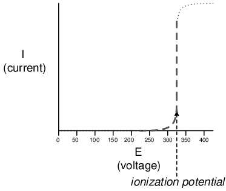
El gráfico que se muestra es aproximado para un espacio de aire pequeño (menos de una pulgada). Un espacio de aire más grande produciría un mayor potencial de ionización, pero la forma de la curva I/E sería muy similar: prácticamente ninguna corriente hasta que se alcanza el potencial de ionización, y luego una conducción sustancial después de eso.
Por cierto, esta es la razón por la que los relámpagos existen como oleadas momentáneas en lugar de flujos continuos de electrones. El voltaje acumulado entre la Tierra y las nubes (o entre diferentes conjuntos de nubes) debe aumentar hasta el punto en que supere el potencial de ionización del espacio de aire antes de que el aire se ionice lo suficiente como para soportar un flujo sustancial de electrones. Una vez que lo haga, la corriente seguirá conduciéndose a través del aire ionizado hasta que se agote la carga estática entre los dos puntos. Una vez que la carga se agota lo suficiente como para que el voltaje caiga por debajo de otro punto umbral, el aire se desioniza y vuelve a su estado normal de resistencia extremadamente alta.
Muchos materiales aislantes sólidos exhiben propiedades de resistencia similares: una resistencia extremadamente alta al flujo de electrones por debajo de algún voltaje umbral crítico, luego una resistencia mucho menor a voltajes más allá de ese umbral. Una vez que un material aislante sólido se ha visto comprometido por un alto voltajedescomponer, como se le llama, a menudo no vuelve a su estado aislante anterior, a diferencia de la mayoría de los gases. Puede volver a aislar a voltajes bajos, pero su voltaje umbral de ruptura se habrá reducido a un nivel más bajo, lo que puede permitir que la ruptura ocurra más fácilmente en el futuro. Este es un modo común de falla en el cableado de alto voltaje: daño al aislamiento debido a una avería. Estas fallas pueden detectarse mediante el uso de medidores de resistencia especiales que emplean alto voltaje (1000 voltios o más).
Hay componentes de circuito diseñados específicamente para proporcionar curvas de resistencia no lineales, uno de ellos es elvaristor. Comúnmente fabricados a partir de compuestos como óxido de zinc o carburo de silicio, estos dispositivos mantienen una alta resistencia en sus terminales hasta que se alcanza un cierto voltaje de "disparo" o "ruptura" (equivalente al "potencial de ionización" de un espacio de aire), momento en el cual su resistencia disminuye dramáticamente. A diferencia de la avería de un aislador, la avería del varistor es repetible: es decir, está diseñado para soportar averías repetidas sin fallo. Aquí se muestra una imagen de un varistor:
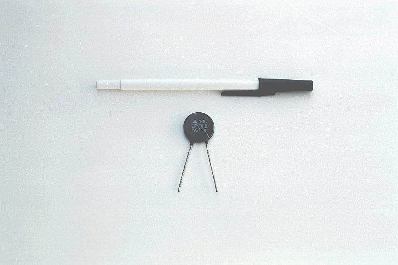
También hay tubos especiales llenos de gas diseñados para hacer prácticamente lo mismo, explotando el mismo principio que funciona en la ionización del aire por un rayo.
Otros componentes eléctricos exhiben curvas de corriente/voltaje aún más extrañas que ésta. Algunos dispositivos realmente experimentan undisminuiren corriente como el voltaje aplicadoaumenta. Debido a que la pendiente de la corriente/voltaje para este fenómeno es negativa (en ángulo hacia abajo en lugar de hacia arriba a medida que avanza de izquierda a derecha), se conoce comoresistencia negativa.
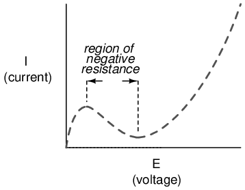
En particular, los tubos de electrones de alto vacío conocidos comotetrodosy diodos semiconductores conocidos comoesaki or túnelLos diodos exhiben resistencia negativa para ciertos rangos de voltaje aplicado.
La Ley de Ohm no es muy útil para analizar el comportamiento de componentes como estos donde la resistencia varía con el voltaje y la corriente. Algunos incluso han sugerido que la "Ley de Ohm" debería ser degradada del estatus de "Ley" porque no es universal. Podría ser más exacto llamar a la ecuación (R=E/I) unadefinicion de resistencia, propio de una determinada clase de materiales en una estrecha gama de condiciones.
Sin embargo, para beneficio del estudiante, asumiremos que las resistencias especificadas en los circuitos de ejemploareestable en una amplia gama de condiciones a menos que se especifique lo contrario. Sólo quería exponerles un poco de la complejidad del mundo real, para que no les dé la falsa impresión de que todos los fenómenos eléctricos podrían resumirse en unas pocas ecuaciones simples.
- REVISAR:
- La resistencia de la mayoría de los materiales conductores es estable en una amplia gama de condiciones, pero esto no es cierto para todos los materiales.
- Cualquier función que se pueda trazar en una gráfica como una línea recta se llamalinealfunción. Para circuitos con resistencias estables, la gráfica de corriente sobre voltaje es lineal (I=E/R).
- En circuitos donde la resistencia varía con los cambios en el voltaje o la corriente, la gráfica de corriente sobre voltaje seráno lineal(no es una línea recta).
- A varistores un componente que cambia la resistencia con la cantidad de voltaje aplicado a través de él. Con poco voltaje a través de él, su resistencia es alta. Luego, a un cierto voltaje de "avería" o "disparo", su resistencia disminuye drásticamente.
- Resistencia negativaEs donde la corriente a través de un componente realmente disminuye a medida que aumenta el voltaje aplicado a través de él. Algunos tubos de electrones y diodos semiconductores (en particular, eltetrodotubo y elesaki, otúneldiodo, respectivamente) exhiben resistencia negativa en un cierto rango de voltajes.
Cableado del circuito
Hasta ahora, hemos estado analizando circuitos de una sola batería y una sola resistencia sin tener en cuenta los cables de conexión entre los componentes, siempre y cuando se forme un circuito completo. ¿Importa la longitud del cable o la "forma" del circuito en nuestros cálculos? Veamos un par de configuraciones de circuito y descubramos:
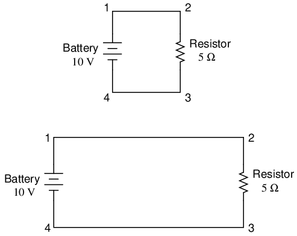
Cuando dibujamos cables que conectan puntos en un circuito, generalmente asumimos que esos cables tienen una resistencia insignificante. Como tales, no aportan ningún efecto apreciable a la resistencia general del circuito, por lo que la única resistencia con la que tenemos que lidiar es la resistencia de los componentes. En los circuitos anteriores, la única resistencia proviene de las resistencias de 5 Ω, por lo que eso es todo lo que consideraremos en nuestros cálculos. En la vida real, los cables metálicos en realidaddotienen resistencia (¡y también las fuentes de energía!), pero esas resistencias generalmente son mucho más pequeñas que la resistencia presente en los otros componentes del circuito que pueden ignorarse con seguridad. Existen excepciones a esta regla en el cableado del sistema de energía, donde incluso cantidades muy pequeñas de resistencia del conductor pueden crear caídas de voltaje significativas dados niveles normales (altos) de corriente.
Si la resistencia del cable de conexión es muy pequeña o nula, podemos considerar los puntos conectados en un circuito comoeléctricamente común. Es decir, los puntos 1 y 2 en los circuitos anteriores pueden estar físicamente unidos o muy separados, y no importa para ninguna medición de voltaje o resistencia relativa a esos puntos. Lo mismo ocurre con los puntos 3 y 4. Es como si los extremos de la resistencia estuvieran conectados directamente a los terminales de la batería, en lo que respecta a nuestros cálculos de la ley de Ohm y mediciones de voltaje. Es útil saber esto, porque significa que puede volver a dibujar un diagrama de circuito o volver a cablear un circuito, acortando o alargando los cables como desee sin afectar apreciablemente la función del circuito. Lo único que importa es que los componentes se unan entre sí en la misma secuencia.
También significa que las mediciones de voltaje entre conjuntos de puntos "eléctricamente comunes" serán las mismas. Es decir, el voltaje entre los puntos 1 y 6 (directamente a través de la batería) será el mismo que el voltaje entre los puntos 3 y 4 (directamente a través de la resistencia). Observe de cerca el siguiente circuito e intente determinar qué puntos son comunes entre sí:
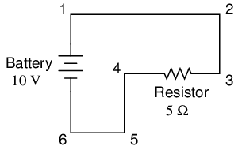
Aquí solo tenemos 2 componentes excluyendo los cables: la batería y la resistencia. Aunque los cables de conexión toman un camino complicado para formar un circuito completo, hay varios puntos eléctricamente comunes en el camino de los electrones. Los puntos 1, 2 y 3 son todos comunes entre sí porque están conectados directamente entre sí mediante cables. Lo mismo ocurre con los puntos 4, 5 y 6.
El voltaje entre los puntos 1 y 6 es de 10 voltios y proviene directamente de la batería. Sin embargo, como los puntos 5 y 4 son comunes al 6, y los puntos 2 y 3 comunes al 1, esos mismos 10 voltios también existen entre estos otros pares de puntos:
Between points 1 and 4 = 10 volts Between points 2 and 4 = 10 volts Between points 3 and 4 = 10 volts (directly across the resistor) Between points 1 and 5 = 10 volts Between points 2 and 5 = 10 volts Between points 3 and 5 = 10 volts Between points 1 and 6 = 10 volts (directly across the battery) Between points 2 and 6 = 10 volts Between points 3 and 6 = 10 volts
Dado que los puntos eléctricamente comunes están conectados entre sí mediante un cable (de resistencia cero), no hay una caída de voltaje significativa entre ellos, independientemente de la cantidad de corriente conducida de uno al siguiente a través de ese cable de conexión. Así, si tuviéramos que leer voltajes entre puntos comunes, deberíamos mostrar (prácticamente) cero:
Between points 1 and 2 = 0 volts Points 1, 2, and 3 are
Between points 2 and 3 = 0 volts electrically common
Between points 1 and 3 = 0 volts
Between points 4 and 5 = 0 volts Points 4, 5, and 6 are
Between points 5 and 6 = 0 volts electrically common
Between points 4 and 6 = 0 volts
Esto también tiene sentido matemáticamente. Con una batería de 10 voltios y una resistencia de 5 Ω, la corriente del circuito será de 2 amperios. Cuando la resistencia del cable es cero, la caída de voltaje en cualquier tramo continuo de cable se puede determinar mediante la Ley de Ohm como tal:
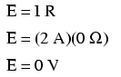
Debería ser obvio que la caída de voltaje calculada a través de cualquier longitud ininterrumpida de cable en un circuito donde se supone que el cable tiene resistencia cero siempre será cero, sin importar la magnitud de la corriente, ya que cero multiplicado por cualquier cosa es igual a cero.
Debido a que los puntos comunes en un circuito exhibirán las mismas mediciones relativas de voltaje y resistencia, los cables que conectan puntos comunes a menudo están etiquetados con la misma designación. Esto no quiere decir que elTerminalLos puntos de conexión están etiquetados de la misma manera, solo los cables de conexión. Tome este circuito como ejemplo:
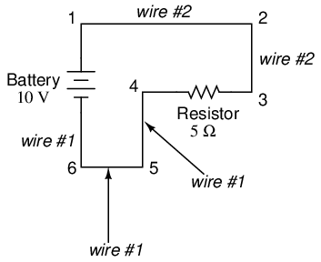
Los puntos 1, 2 y 3 son todos comunes entre sí, por lo que el cable que conecta el punto 1 a 2 está etiquetado de la misma manera (cable 2) que el cable que conecta el punto 2 a 3 (cable 2). En un circuito real, es posible que el cable que se extiende desde el punto 1 al 2 ni siquiera sea del mismo color o tamaño que el cable que conecta el punto 2 al 3, pero deben llevar exactamente la misma etiqueta. Lo mismo ocurre con los cables que conectan los puntos 6, 5 y 4.
Saber que los puntos eléctricamente comunes tienen una caída de voltaje cero entre ellos es un principio valioso para la resolución de problemas. Si mido el voltaje entre puntos de un circuito que se supone que son comunes entre sí, debería leer cero. Sin embargo, si leo un voltaje sustancial entre esos dos puntos, entonces sé con certeza que no pueden conectarse directamente entre sí. Si esos puntos sonsupuestoser eléctricamente común pero registran lo contrario, entonces sé que hay una "falla abierta" entre esos puntos.
Una nota final: para la mayoría de los fines prácticos, se puede suponer que los conductores de alambre poseen resistencia cero de un extremo a otro. En realidad, sin embargo, siempre habrá una pequeña cantidad de resistencia a lo largo de un cable, a menos que sea un cable superconductor. Sabiendo esto, debemos tener en cuenta que los principios aprendidos aquí sobre los puntos eléctricamente comunes son todos válidos en gran medida, pero no en gran medida.absolutogrado. Es decir, la regla de que se garantiza que los puntos eléctricamente comunes tendrán voltaje cero entre ellos se expresa con mayor precisión como tal: los puntos eléctricamente comunes tendránmuy pococaída de tensión entre ellos. Ese pequeño y prácticamente inevitable rastro de resistencia que se encuentra en cualquier trozo de cable de conexión seguramente creará un pequeño voltaje a lo largo de él a medida que pasa la corriente. Siempre que comprenda que estas reglas se basan enidealcondiciones, no se quedará perplejo cuando encuentre alguna condición que parezca una excepción a la regla.
- REVISAR:
- Se supone que los cables de conexión en un circuito tienen resistencia cero a menos que se indique lo contrario.
- Los cables de un circuito se pueden acortar o alargar sin afectar la función del circuito; lo único que importa es que los componentes estén conectados entre sí en la misma secuencia.
- Los puntos conectados directamente entre sí en un circuito mediante resistencia cero (cable) se consideraneléctricamente común.
- Los puntos eléctricamente comunes, con resistencia cero entre ellos, tendrán una caída de voltaje cero entre ellos, independientemente de la magnitud de la corriente (idealmente).
- Las lecturas de voltaje o resistencia referenciadas entre conjuntos de puntos eléctricamente comunes serán las mismas.
- Estas reglas se aplican aidealcondiciones en las que se supone que los cables de conexión poseen una resistencia absolutamente nula. En la vida real probablemente este no será el caso, pero las resistencias de los cables deben ser lo suficientemente bajas para que los principios generales aquí establecidos sigan siendo válidos.
Polaridad de las caídas de tensión
Podemos rastrear la dirección en la que fluirán los electrones en el mismo circuito comenzando en el terminal negativo (-) y siguiendo hasta el terminal positivo (+) de la batería, la única fuente de voltaje en el circuito. De esto podemos ver que los electrones se mueven en sentido antihorario, del punto 6 al 5 al 4 al 3 al 2 al 1 y de regreso al 6 nuevamente.
Cuando la corriente encuentra la resistencia de 5 Ω, el voltaje cae en los extremos de la resistencia. La polaridad de esta caída de voltaje es negativa (-) en el punto 4 con respecto a positiva (+) en el punto 3. Podemos marcar la polaridad de la caída de voltaje de la resistencia con estos símbolos negativos y positivos, de acuerdo con la dirección de la corriente (cualquiera que sea el extremo de la resistencia en el que se encuentre la corriente).entrandoes negativo con respecto al final de la resistencia, essaliendo:
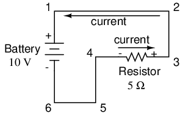
Podríamos hacer nuestra tabla de voltajes un poco más completa marcando la polaridad del voltaje para cada par de puntos de este circuito:
Between points 1 (+) and 4 (-) = 10 volts Between points 2 (+) and 4 (-) = 10 volts Between points 3 (+) and 4 (-) = 10 volts Between points 1 (+) and 5 (-) = 10 volts Between points 2 (+) and 5 (-) = 10 volts Between points 3 (+) and 5 (-) = 10 volts Between points 1 (+) and 6 (-) = 10 volts Between points 2 (+) and 6 (-) = 10 volts Between points 3 (+) and 6 (-) = 10 volts
Si bien puede parecer un poco tonto documentar la polaridad de la caída de voltaje en este circuito, es un concepto importante que es importante dominar. Será de vital importancia en el análisis de circuitos más complejos que involucran múltiples resistencias y/o baterías.
Debe entenderse que la polaridad no tiene nada que ver con la Ley de Ohm: ¡nunca se introducirán voltajes, corrientes o resistencias negativas en ninguna ecuación de la Ley de Ohm! Existen otros principios matemáticos de la electricidad que sí tienen en cuenta la polaridad mediante el uso de signos (+ o -), pero no la Ley de Ohm.
- REVISAR:
- La polaridad de la caída de voltaje a través de cualquier componente resistivo está determinada por la dirección del flujo de electrones a través de él:negativoentrando, ypositivosaliendo.
Simulación por computadora de circuitos eléctricos
Las computadoras pueden ser herramientas poderosas si se usan adecuadamente, especialmente en los ámbitos de la ciencia y la ingeniería. Existe software para la simulación de circuitos eléctricos por computadora, y estos programas pueden ser muy útiles para ayudar a los diseñadores de circuitos a probar ideas antes de construir circuitos reales, ahorrando mucho tiempo y dinero.
Estos mismos programas pueden ser una ayuda fantástica para el estudiante principiante de electrónica, ya que permiten la exploración de ideas de forma rápida y sencilla sin necesidad de ensamblar circuitos reales. Por supuesto, no hay sustituto para construir y probar circuitos reales, pero las simulaciones por computadora ciertamente ayudan en el proceso de aprendizaje al permitir al estudiante experimentar con cambios y ver los efectos que tienen en los circuitos. A lo largo de este libro, incorporaré con frecuencia impresiones por computadora de simulación de circuitos para ilustrar conceptos importantes. Al observar los resultados de una simulación por computadora, un estudiante puede obtener una comprensión intuitiva del comportamiento del circuito sin la intimidación del análisis matemático abstracto.
Para simular circuitos en la computadora, utilizo un programa particular llamado SPICE, que funciona describiendo un circuito a la computadora mediante un listado de texto. En esencia, este listado es una especie de programa informático en sí mismo y debe cumplir con las reglas sintácticas del lenguaje SPICE. Luego, la computadora se utiliza para procesar o "ejecutar" el programa SPICE, que interpreta el listado de texto que describe el circuito y genera los resultados de su análisis matemático detallado, también en forma de texto. Muchos detalles sobre el uso de SPICE se describen en el volumen 5 ("Referencia") de esta serie de libros para aquellos que deseen más información. Aquí, simplemente presentaré los conceptos básicos y luego aplicaré SPICE al análisis de estos circuitos simples sobre los que hemos estado leyendo.
En primer lugar, necesitamos tener instalado SPICE en nuestro ordenador. Como programa gratuito, normalmente está disponible en Internet para descargar y en formatos apropiados para muchos sistemas operativos diferentes. En este libro utilizo una de las versiones anteriores de SPICE: la versión 2G6, por su simplicidad de uso.
A continuación, necesitamos un circuito para que SPICE lo analice. Probemos uno de los circuitos ilustrados anteriormente en este capítulo. Aquí está su diagrama esquemático:
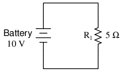
Este circuito simple consta de una batería y una resistencia conectadas directamente entre sí. Conocemos el voltaje de la batería (10 voltios) y la resistencia de la resistencia (5 Ω), pero nada más sobre el circuito. Si describimos este circuito a SPICE, debería poder decirnos (como mínimo) cuánta corriente tenemos en el circuito utilizando la Ley de Ohm (I=E/R).
SPICE no puede comprender directamente un diagrama esquemático ni ninguna otra forma de descripción gráfica. SPICE es un programa informático basado en texto y exige que un circuito se describa en términos de sus componentes y puntos de conexión. Cada punto de conexión único en un circuito se describe para SPICE mediante un número de "nodo". Los puntos eléctricamente comunes entre sí en el circuito a simular se designan como tales compartiendo el mismo número. Podría resultar útil pensar en estos números como números de "cable" en lugar de números de "nodo", siguiendo la definición dada en la sección anterior. Así es como la computadora sabe qué está conectado a qué: compartiendo números de cables o nodos comunes. En nuestro circuito de ejemplo, sólo tenemos dos "nodos", el cable superior y el cable inferior. SPICE exige que haya un nodo 0 en algún lugar del circuito, por lo que etiquetaremos nuestros cables 0 y 1:
En la ilustración anterior, he mostrado varias etiquetas "1" y "0" alrededor de cada cable respectivo para enfatizar el concepto de puntos comunes que comparten números de nodos comunes, pero aun así se trata de una imagen gráfica, no de una descripción de texto. SPICE necesita que se le proporcionen los valores de los componentes y los números de nodos en forma de texto antes de que pueda continuar cualquier análisis.
Crear un archivo de texto en una computadora implica el uso de un programa llamadoeditor de texto. Similar a un procesador de textos, un editor de texto le permite escribir texto y registrar lo que ha escrito en forma de un archivo almacenado en el disco duro de la computadora. Los editores de texto carecen de la capacidad de formato de los procesadores de texto (noitálico, atrevido, otestadocaracteres), y esto es algo bueno, ya que programas como SPICE no sabrían qué hacer con esta información adicional. Si queremos crear un archivo de texto plano, sin absolutamente nada registrado excepto los caracteres del teclado que seleccionemos, un editor de texto es la herramienta a utilizar.
Si utiliza un sistema operativo de Microsoft como DOS o Windows, hay un par de editores de texto disponibles con el sistema. En DOS, existe el viejoEditarprograma de edición de texto, que se puede invocar escribiendoeditaren el símbolo del sistema. En Windows (3.x/95/98/NT/Me/2k/XP), elBlocEl editor de texto es su elección estándar. Hay muchos otros programas de edición de texto disponibles y algunos incluso son gratuitos. Resulta que uso un editor de texto gratuito llamadoVimy ejecútelo en los sistemas operativos Windows 95 y Linux. Poco importa qué editor uses, así que no te preocupes si las capturas de pantalla de esta sección no se parecen a las tuyas; la información importante aquí eslo que escribes, nocual editorpor casualidad usas.
Para describir este circuito simple de dos componentes a SPICE, comenzaré invocando mi programa de edición de texto y escribiendo una línea de "título" para el circuito:
Podemos describir la batería a la computadora escribiendo una línea de texto que comience con la letra "v" (para "Fuente de voltaje"), identificando a qué cable se conecta cada terminal de la batería (los números de nodo) y el voltaje de la batería, así:
Esta línea de texto le dice a SPICE que tenemos una fuente de voltaje conectada entre los nodos 1 y 0, corriente continua (CC), 10 voltios. Eso es todo lo que la computadora necesita saber sobre la batería. Ahora pasemos a la resistencia: SPICE requiere que las resistencias se describan con una letra "r", los números de los dos nodos (puntos de conexión) y la resistencia en ohmios. Dado que se trata de una simulación por computadora, no es necesario especificar una potencia nominal para la resistencia. Eso es algo bueno acerca de los componentes "virtuales": ¡no pueden verse dañados por voltajes o corrientes excesivos!
Ahora SPICE sabrá que hay una resistencia conectada entre los nodos 1 y 0 con un valor de 5 Ω. Esta breve línea de texto le dice a la computadora que tenemos una resistencia ("r") conectado entre los mismos dos nodos que la batería (1 y 0), con un valor de resistencia de 5 Ω.
Si agregamos un.finSi agregamos una declaración a esta colección de comandos SPICE para indicar el final de la descripción del circuito, tendremos toda la información que SPICE necesita, recopilada en un archivo y lista para su procesamiento. Esta descripción de circuito, compuesta por líneas de texto en un archivo de computadora, se conoce técnicamente comolista de redes, ocubierta:
Una vez que hayamos terminado de escribir todos los comandos SPICE necesarios, debemos "guardarlos" en un archivo en el disco duro de la computadora para que SPICE tenga algo a lo que hacer referencia cuando se invoque. Como esta es mi primera lista de red de SPICE, la guardaré con el nombre de archivo "circuito1.cir" (el nombre real es arbitrario). Puede optar por nombrar su primera lista de red SPICE con un nombre completamente diferente, siempre y cuando no viole ninguna regla de nombre de archivo para su sistema operativo, como usar no más de 8+3 caracteres (ocho caracteres en el nombre y tres caracteres en la extensión:12345678.123) en DOS.
Para invocar SPICE (dígale que procese el contenido delcircuito1.cirnetlist), tenemos que salir del editor de texto y acceder a un símbolo del sistema (el "indicador de DOS" para usuarios de Microsoft) donde podemos introducir comandos de texto para que el sistema operativo del ordenador los obedezca. Esta forma "primitiva" de invocar un programa puede parecer arcaica para los usuarios de computadoras acostumbrados a un entorno gráfico de "apuntar y hacer clic", pero es una forma muy poderosa y flexible de hacer las cosas. Recuerde, lo que está haciendo aquí al usar SPICE es una forma simple de programación de computadora, y cuanto más cómodo se sienta al darle a la computadora comandos en forma de texto para que los siga, en lugar de simplemente hacer clic en las imágenes de los íconos con el mouse, más dominio tendrá sobre su computadora.
Una vez en el símbolo del sistema, escriba este comando, seguido de presionar la tecla [Intro] (este ejemplo usa el nombre de archivocircuito1.cir; Si ha elegido un nombre de archivo diferente para su archivo netlist, sustitúyalo):
spice < circuit1.cir
Así es como se ve esto en mi computadora (que ejecuta el sistema operativo Linux), justo antes de presionar la tecla [Enter]:
Tan pronto como presione la tecla [Enter] para emitir este comando, el texto de la salida de SPICE debería desplazarse en la pantalla de la computadora. Aquí hay una captura de pantalla que muestra lo que SPICE genera en mi computadora (he alargado la ventana "terminal" para mostrarle el texto completo. Con una terminal de tamaño normal, el texto excede fácilmente la longitud de una página):
SPICE comienza con una reiteración de la netlist, completa con la línea de título y.findeclaración. Aproximadamente a la mitad de la simulación, muestra el voltaje en todos los nodos con referencia al nodo 0. En este ejemplo, solo tenemos un nodo distinto del nodo 0, por lo que muestra el voltaje allí: 10,0000 voltios. Luego muestra la corriente a través de cada fuente de voltaje. Como solo tenemos una fuente de voltaje en todo el circuito, solo muestra la corriente a través de esa. En este caso, la fuente de corriente es de 2 amperios. Debido a una peculiaridad en la forma en que SPICE analiza la corriente, el valor de 2 amperios se genera como 2 amperios negativos (-).
La última línea de texto en el informe de análisis de la computadora es "disipación de energía total", que en este caso se expresa como "2,00E+01" vatios: 2,00 x 101, o 20 vatios. SPICE genera la mayoría de las cifras en notación científica en lugar de notación normal (de punto fijo). Si bien esto puede parecer más confuso al principio, en realidad lo es menos cuando se trata de números muy grandes o muy pequeños. Los detalles de la notación científica se tratarán en el próximo capítulo de este libro.
Uno de los beneficios de utilizar un programa "primitivo" basado en texto como SPICE es que los archivos de texto tratados son extremadamente pequeños en comparación con otros formatos de archivo, especialmente los formatos gráficos utilizados en otros programas de simulación de circuitos. Además, el hecho de que la salida de SPICE sea texto plano significa que puede dirigir la salida de SPICE a otro archivo de texto donde pueda manipularse más. Para hacer esto, volvemos a emitir un comando al sistema operativo de la computadora para invocar SPICE, esta vez redirigiendo la salida a un archivo que llamaré "salida.txt":
SPICE se ejecutará "silenciosamente" esta vez, sin el flujo de texto en la pantalla de la computadora como antes. Un nuevo archivo,salida1.txt, se creará, que podrá abrir y modificar utilizando un editor o procesador de textos. Para esta ilustración, usaré el mismo editor de texto (Vim) para abrir este archivo:
Ahora, puedo editar libremente este archivo, eliminando cualquier texto superfluo (como los "banners" que muestran la fecha y la hora), dejando sólo el texto que considero pertinente para el análisis de mi circuito:
Una vez editado adecuadamente y vuelto a guardar con el mismo nombre de archivo (salida.txten este ejemplo), el texto se puede pegar en cualquier tipo de documento, siendo el "texto sin formato" un formato de archivo universal para casi todos los sistemas informáticos. Incluso puedo incluirlo directamente en el texto de este libro, en lugar de como una imagen gráfica de "captura de pantalla", así:
my first circuit v 1 0 dc 10 r 1 0 5 .end
node voltage ( 1) 10.0000
voltage source currents name current v -2.000E+00
total power dissipation 2.00E+01 watts
Por cierto, este es el formato preferido para la salida de texto de las simulaciones de SPICE en esta serie de libros: como texto real, no como imágenes gráficas de captura de pantalla.
Para modificar el valor de un componente en la simulación, necesitamos abrir el archivo netlist (circuito1.cir) y realice las modificaciones necesarias en la descripción de texto del circuito, luego guarde esos cambios con el mismo nombre de archivo y vuelva a invocar SPICE en el símbolo del sistema. Este proceso de edición y procesamiento de un archivo de texto es familiar para todos los programadores de computadoras. Una de las razones por las que me gusta enseñar SPICE es que prepara al alumno para pensar y trabajar como un programador de computadoras, lo cual es bueno porque la programación de computadoras es un área importante del trabajo en electrónica avanzada.
Anteriormente exploramos las consecuencias de cambiar una de las tres variables en un circuito eléctrico (voltaje, corriente o resistencia) usando la Ley de Ohm para predecir matemáticamente lo que sucedería. Ahora intentemos lo mismo usando SPICE para hacer los cálculos por nosotros.
Si triplicamos el voltaje en nuestro último circuito de ejemplo de 10 a 30 voltios y mantenemos la resistencia del circuito sin cambios, esperaríamos que la corriente también se triplique. Intentemos esto, cambiando el nombre de nuestro archivo netlist para no sobrescribir el primer archivo. De esta manera tendremosambosVersiones de la simulación del circuito almacenadas en el disco duro de nuestra computadora para uso futuro. La siguiente lista de texto es el resultado de SPICE para esta lista de red modificada, formateada como texto plano en lugar de como una imagen gráfica de la pantalla de mi computadora:
second example circuit v 1 0 dc 30 r 1 0 5 .end
node voltage ( 1) 30.0000
voltage source currents name current v -6.000E+00 total power dissipation 1.80E+02 watts
Tal como esperábamos, la corriente se triplicó con el aumento de voltaje. La corriente solía ser de 2 amperios, pero ahora ha aumentado a 6 amperios (-6.000 x 100). Observe también cómo ha aumentado la disipación total de potencia en el circuito. Antes era de 20 vatios, pero ahora es de 180 vatios (1,8 x 102). Recordando que la potencia está relacionada con el cuadrado del voltaje (Ley de Joule: P=E2/R), esto tiene sentido. Si triplicamos el voltaje del circuito, la potencia debería aumentar en un factor de nueve (32= 9). Nueve por 20 es de hecho 180, por lo que la producción de SPICE sí se correlaciona con lo que sabemos sobre la potencia en los circuitos eléctricos.
Si queremos ver cómo respondería este circuito simple en una amplia gama de voltajes de batería, podemos invocar algunas de las opciones más avanzadas dentro de SPICE. Aquí usaré el ".dc" opción de análisis para variar el voltaje de la batería de 0 a 100 voltios en incrementos de 5 voltios, imprimiendo el voltaje y la corriente del circuito en cada paso. Las líneas en la lista de red SPICE que comienzan con un símbolo de estrella ("*") soncomentarios. Es decir, no le dicen a la computadora que haga nada relacionado con el análisis de circuitos, sino que simplemente sirven como notas para cualquier ser humano que lea el texto de la lista de redes.
third example circuit v 1 0 r 1 0 5 *the ".dc" statement tells spice to sweep the "v" supply *voltage from 0 to 100 volts in 5 volt steps. .dc v 0 100 5 .print dc v(1) i(v) .end
The .imprimirEl comando en esta lista de red de SPICE le indica a SPICE que imprima columnas de números correspondientes a cada paso del análisis:
v i(v) 0.000E+00 0.000E+00 5.000E+00 -1.000E+00 1.000E+01 -2.000E+00 1.500E+01 -3.000E+00 2.000E+01 -4.000E+00 2.500E+01 -5.000E+00 3.000E+01 -6.000E+00 3.500E+01 -7.000E+00 4.000E+01 -8.000E+00 4.500E+01 -9.000E+00 5.000E+01 -1.000E+01 5.500E+01 -1.100E+01 6.000E+01 -1.200E+01 6.500E+01 -1.300E+01 7.000E+01 -1.400E+01 7.500E+01 -1.500E+01 8.000E+01 -1.600E+01 8.500E+01 -1.700E+01 9.000E+01 -1.800E+01 9.500E+01 -1.900E+01 1.000E+02 -2.000E+01
Si vuelvo a editar el archivo netlist, cambiando el.imprimircomando en un.tramacomando, SPICE generará un gráfico crudo compuesto de caracteres de texto:
Legend: + = v#branch ------------------------------------------------------------------------ sweep v#branch-2.00e+01 -1.00e+01 0.00e+00 ---------------------|------------------------|------------------------| 0.000e+00 0.000e+00 . . + 5.000e+00 -1.000e+00 . . + . 1.000e+01 -2.000e+00 . . + . 1.500e+01 -3.000e+00 . . + . 2.000e+01 -4.000e+00 . . + . 2.500e+01 -5.000e+00 . . + . 3.000e+01 -6.000e+00 . . + . 3.500e+01 -7.000e+00 . . + . 4.000e+01 -8.000e+00 . . + . 4.500e+01 -9.000e+00 . . + . 5.000e+01 -1.000e+01 . + . 5.500e+01 -1.100e+01 . + . . 6.000e+01 -1.200e+01 . + . . 6.500e+01 -1.300e+01 . + . . 7.000e+01 -1.400e+01 . + . . 7.500e+01 -1.500e+01 . + . . 8.000e+01 -1.600e+01 . + . . 8.500e+01 -1.700e+01 . + . . 9.000e+01 -1.800e+01 . + . . 9.500e+01 -1.900e+01 . + . . 1.000e+02 -2.000e+01 + . . ---------------------|------------------------|------------------------| sweep v#branch-2.00e+01 -1.00e+01 0.00e+00
En ambos formatos de salida, la columna de números de la izquierda representa el voltaje de la batería en cada intervalo, a medida que aumenta de 0 voltios a 100 voltios, 5 voltios a la vez. Los números en la columna de la derecha indican la corriente del circuito para cada uno de esos voltajes. Mire de cerca esos números y verá la relación proporcional entre cada par: la ley de Ohm (I=E/R) se cumple en todos y cada uno de los casos, cada valor de corriente es 1/5 del valor de voltaje respectivo, porque la resistencia del circuito es exactamente 5 Ω. Una vez más, las cifras negativas de corriente en este análisis de SPICE son más una peculiaridad que cualquier otra cosa. Sólo preste atención al valor absoluto de cada número a menos que se especifique lo contrario.
Incluso existen algunos programas informáticos capaces de interpretar y convertir los datos no gráficos generados por SPICE en un diagrama gráfico. Uno de estos programas se llamaNuez moscada, y su salida se parece a esto:
Observe cómo Nutmeg traza el voltaje de la resistenciav(1)(voltaje entre el nodo 1 y el punto de referencia implícito del nodo 0) como una línea con pendiente positiva (de abajo a la izquierda a arriba a la derecha).
Si alguna vez llega a dominar el uso de SPICE o no, no es relevante para su aplicación en este libro. Lo único que importa es que comprenda lo que significan los números en un informe generado por SPICE. En los ejemplos siguientes, haré todo lo posible para anotar los resultados numéricos de SPICE para eliminar cualquier confusión y desbloquear el poder de esta asombrosa herramienta para ayudarle a comprender el comportamiento de los circuitos eléctricos.
Colaboradores
Los contribuyentes a este capítulo se enumeran en orden cronológico de sus contribuciones, desde el más reciente hasta el primero. Consulte el Apéndice 2 (Lista de colaboradores) para fechas e información de contacto.
Larry Cramblett(20 de septiembre de 2004): se identificó un error tipográfico grave en la sección "Conducción no lineal".
James Boorn(18 de enero de 2001): identificó un error en la estructura de la oración y ofreció corrección. Además, se identificó una discrepancia en los requisitos de sintaxis de netlist entre la versión 2g6 de SPICE y la versión 3f5.
Ben Crowell, Ph.D.(13 de enero de 2001): sugerencias para mejorar la precisión técnica deVoltaje and cargardefiniciones.
Jason Stark(Junio de 2000): Formato de documentos HTML, que dio lugar a una segunda edición mucho más atractiva.
Lecciones en circuitos eléctricoscopyright (C) 2000-2023 Tony R. Kuphaldt, según los términos y condiciones delCC BY License.